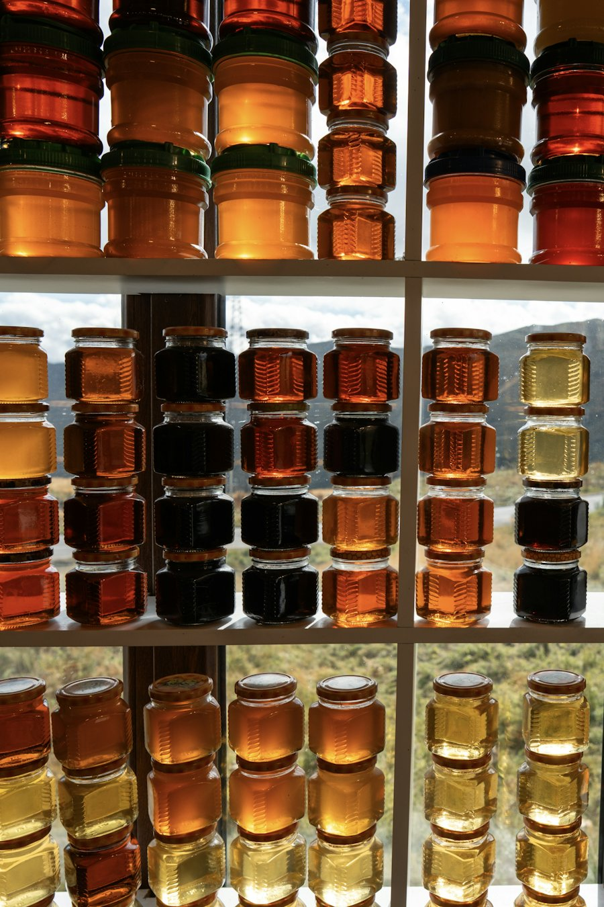

Cuisinés sur place, à commander par téléphone et à récupérer en boutique. Pour un repas à la maison, une tablée de famille ou un groupe.
Les plats du moment sont annoncés sur Facebook. Pour connaître la carte de la semaine et les prix, un appel suffit.
Des plats cuisinés frais et généreux, prêts à réchauffer.
Un tarif groupes existe pour les grandes tablées : demandez un devis au téléphone.
Fumés sur place, au Guilvinec, à deux pas du port.
Préparées à la Maison Kéréon, à emporter avec la commande.

La maison produit son propre miel, récolté dans son rucher d'abeilles noires à Penmarc'h. Il est proposé en boutique avec les confitures maison.
| Lundi | Fermé |
| Mardi | 8h - 16h |
| Mercredi | Fermé |
| Jeudi | 8h - 19h |
| Vendredi | 8h - 19h |
| Samedi | 8h - 19h |
| Dimanche | 8h - 16h |
Horaires relevés avant la fermeture temporaire, à confirmer pour la réouverture du 18 novembre : les nouveautés sont annoncées sur Facebook.